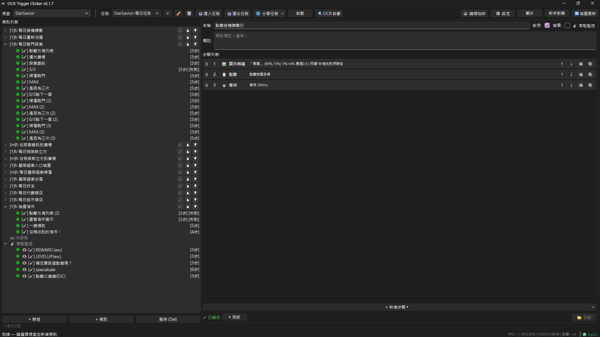
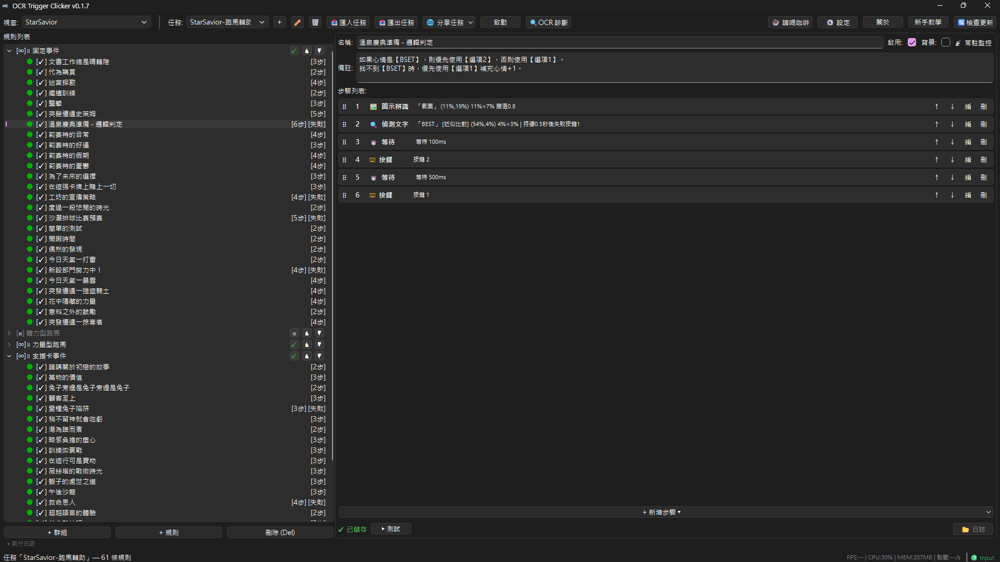

每日任務 跑馬輔助 1920x1080 1600x900
OCR Trigger Clicker 內建兩套可直接使用的 星之救援者 (StarSavior) 自動化任務：每日任務全自動（掛機獎勵、派遣、戰鬥探索、星際迴廊、商店、好友、信件檢查、每日 PVP）與跑馬事件輔助（自動應對隨機事件、跳過戰鬥選項）。
任務來源解析度：1920x1080（16:9，同為 16:9 的解析度如 1600x900 可直接通用），繁體中文遊戲環境。
點擊下載 JSON 檔案，然後在工具中按「匯入任務」選取即可。
📌 任務來源解析度：1920×1080（16:9）。座標存為視窗比例，同為 16:9 的解析度（如 1600×900）可直接通用；長寬比不同需重新框選 ROI。
OCRTriggerClicker-win-Setup.exe，執行安裝後啟動工具（之後新版本會自動更新）。每日任務涵蓋掛機獎勵、重新派遣、戰鬥探索、帕萊斯立方、星際迴廊掃蕩與收尾、好友、付費/啟示商店、信件檢查、每日 PVP 等完整流程。多數群組設為 mode=once，完成後自動跳下一群組，可依需求自行啟停。

跑馬輔助使用 parallel（並行） 模式搭配 loop（循環），每幀從頭掃全部規則，第一個符合條件的事件觸發後執行對應按鍵操作。適合無法預測順序的隨機事件場景。
涵蓋固定事件、體力型跑馬、力量型跑馬、支援卡事件與自動輔助（防呆/便利）等類別，各類事件的規則內容與數量會隨版本調整。
體力型與力量型通常二選一，使用者依角色屬性自行啟停。

任務以 1920x1080（16:9）為來源解析度設計。座標存為視窗比例，同為 16:9 的解析度（如 1600x900、1280x720、2560x1440）通常可直接通用；長寬比不同時遊戲 UI 布局會重排，需重新框選 ROI 或調整點擊座標。圖片比對的縮放搜尋範圍約 0.5~2 倍，解析度差距過大時可能失效。
請確認：1) 遊戲處於主頁（大廳） 2) 工具已選取目標視窗為「StarSavior」 3) 繁體中文遊戲環境。
使用 parallel 模式每幀掃描全部規則，偵測到對應事件圖示或文字後，自動按下對應選項按鍵。因為事件順序是隨機的，parallel 模式會在第一個符合條件的事件觸發後結束該幀處理。
不支援——StarSavior 這款遊戲只能前景。跑 StarSavior 任務時，請讓遊戲視窗保持在前景且可見（不要最小化、不要被遮蓋）。
工具本身有提供後台功能（PrintWindow 截圖 + Frida 注入點擊／按鍵，零游標干擾、不搶焦點），但不是所有遊戲都能用。後台模式下，視窗可被其他視窗遮蓋，但不能最小化；能不能後台取決於遊戲的底層設計——多數 Unity 開發的遊戲用 GPU 直接繪製畫面、輸入走自家低階系統，後台看不到畫面也點不進去，這是遊戲限制、不是工具問題。
想確認其他遊戲是否支援後台，可先到「OCR 診斷」頁做點擊／鍵盤測試；不支援就改回前景模式。
請到 GitHub Issues 回報，標題註明「StarSavior」以便區分。